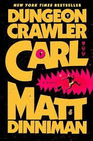
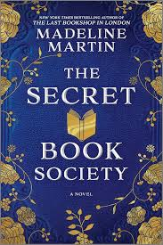
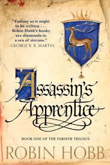

| Title | Author | Front cover | Description |
|---|---|---|---|
| Dungeon Crawler Carl | Matt Dinniman |  |
You know what’s worse than breaking up with your girlfriend? Being stuck with her prize-winning show cat. And you know what’s worse than that? An alien invasion, the destruction of all man-made structures on Earth, and the systematic exploitation of all the survivors for a sadistic intergalactic game show. That’s what. Join Coast Guard vet Carl and his ex-girlfriend’s cat, Princess Donut, as they try to survive the end of the world—or just get to the next level—in a video game–like, trap-filled fantasy dungeon. A dungeon that’s actually the set of a reality television show with countless viewers across the galaxy. Exploding goblins. Magical potions. Deadly, drug-dealing llamas. This ain’t your ordinary game show. Welcome, Crawler. Welcome to the Dungeon. Survival is optional. Keeping the viewers entertained is not. |
| The Secret Book Society | Madeline Martin |  |
London, 1895: Trapped by oppressive marriages and societal expectations, three women receive a mysterious invitation to an afternoon tea at the home of the reclusive Lady Duxbury. Beneath the genteel facade of the gathering lies a secret book club--a sanctuary where they can discover freedom, sisterhood, and the courage to rewrite their stories. Eleanor Clarke, a devoted mother suffocating under the tyranny of her husband. Rose Wharton, a transplanted American dollar princess struggling to fit the mold of an aristocratic wife. Lavinia Cavendish, an artistic young woman haunted by a dangerous family secret. All are drawn to the enigmatic Lady Duxbury, a thrice-widowed countess whose husbands' untimely deaths have sparked whispers of murder. |
| Assassins Apprentice | Robin Hobb |  |
Young Fitz is the bastard son of the noble Prince Chivalry, raised in the shadow of the royal court by his father’s gruff stableman. He is treated as an outcast by all the royalty except the devious King Shrewd, who has him secretly tutored in the arts of the assassin. For in Fitz’s blood runs the magic Skill—and the darker knowledge of a child raised with the stable hounds and rejected by his family. As barbarous raiders ravage the coasts, Fitz is growing to manhood. Soon he will face his first dangerous, soul-shattering mission. And though some regard him as a threat to the throne, he may just be the key to the survival of the kingdom. |